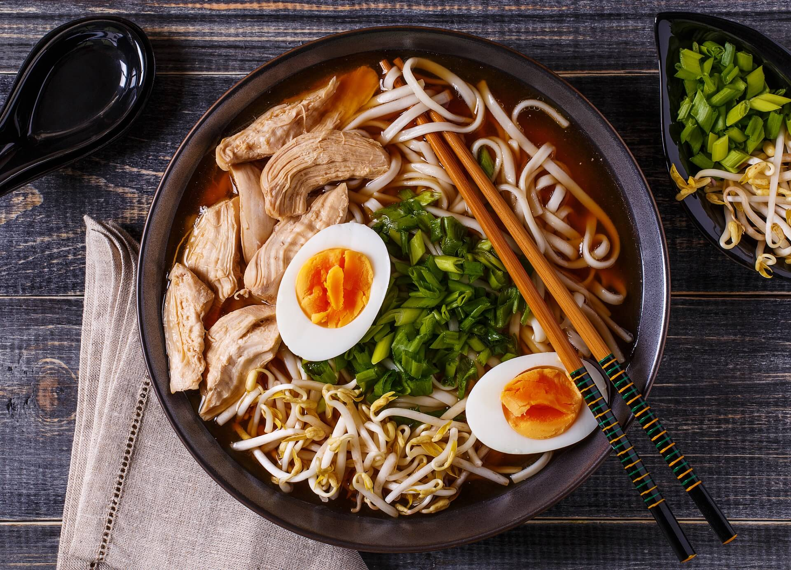

Essen & Trinken in Tokio
Tokio gilt als eine der kulinarischen Hauptstädte der Welt mit unzähligen Leckereien:
- Ramen: Kräftige Nudelsuppen mit verschiedenen Brühen.
- Sushi: Fangfrischer Fisch direkt vom Fischmarkt.
- Street Food: Takoyaki und Yakitori-Spieße.

← Zurück zur Übersicht